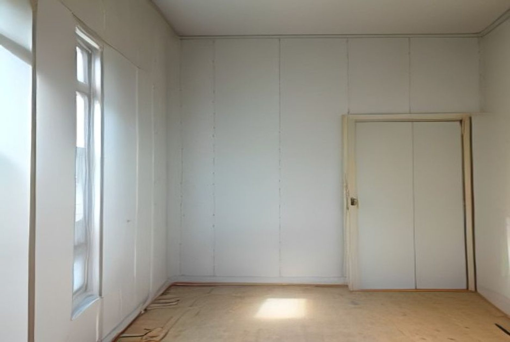

Drywall contractor in Singapore: services & how to choose one

Two drywall quotes for the same wall can differ by 40% and both be honest, because they are quoting different jobs. One stops at boarding; the other includes taping, three coats of jointing, skimming and priming, which is where a wall stops looking bolted on. This guide covers what drywall services actually include, what a proper job looks like day by day, and the questions that separate a contractor worth hiring from a cheap number on WhatsApp. For pricing by square foot, see our drywall and partition wall cost guide.
What drywall contractors actually do
"Drywall" covers more than partition walls, and most owners only find out when they need the other half of the list:
| Service | Indicative cost (SGD) | What it's for |
|---|---|---|
| Partition wall, supplied & installed | $20 – $40 per sq ft | Dividing a room, closing off a study nook |
| Typical room divider (~72 sq ft) | $1,500 – $2,800 | The most common HDB scope, ready for paint |
| False ceiling & bulkheads | Priced by area | Hiding aircon trunking and pipework, cove lighting |
| Boxing-in / pipe casing | $150 – $600 per run | Concealing exposed pipes, beams and columns |
| Hole patching | $120 – $300 | Impact damage, removed fixtures, old openings |
| Water-damaged board replacement | $300 – $800 | After a leak, board must be cut back to dry |
| Re-skim existing wall face | $8 – $15 per sq ft | Telegraphing joints, patch marks, poor old finish |
| Noggins / plywood backing | $80 – $250 | Load-bearing backing for TVs and cabinets |
The repair lines matter more than people expect. Board that has taken a leak cannot be dried out and painted over. It has lost its strength and will hold mould behind the paint. It has to be cut back to sound, dry material and replaced. Fix the leak first: our guides on bathroom waterproofing and leaking taps and pipes cover the cause.
What a proper job looks like, day by day
A partition wall in an HDB flat, done properly, runs roughly like this:
- Day 0: measure and mark. Wall line set out on floor and ceiling, checked against the door swing, the aircon, the lighting layout and where furniture will go.
- Day 1: track and studs. Floor and ceiling track fixed, steel studs dropped in at 400–600 mm centres, plumbed and squared.
- Day 1: services and backing. Electrical conduit, switch boxes and data cabling run inside the open cavity, and plywood backing or noggins fixed wherever anything heavy will hang. This is the point of no return.
- Day 2: boarding. Plasterboard screwed to both faces, joints staggered, screw heads set just below the surface without breaking the paper.
- Days 3–5: taping and jointing. Tape over joints, corner beads on external angles, then successive coats of compound with full drying between each.
- Day 5: skim and sand. The whole face skimmed so joints and screw spots disappear into one plane.
- Day 6: prime. Fresh board and compound are thirsty; a sealer coat goes on before any finish paint, or the paint dries patchy.
- Then paint. Covered in our HDB painting guide.
Notice the shape of it: framing and boarding are two days; finishing is four. Anyone promising a finished partition in two days is compressing drying time, and that is the single most common reason joints crack a few months later.
Four questions that sort the quotes
Ask these before comparing prices, because the answers explain the prices:
- What's the specification? Stud gauge and spacing, board thickness, single or double boarding per face. A quote that says only "drywall partition" is hiding the spec, and spec is most of the cost difference.
- Is finishing included, and to what level? Taping, how many coats of jointing, full skim or spot-fill only, primer in or out. This is the biggest gap between two quotes for "the same wall".
- Where's the backing going? Tell them every heavy item (TV, wall cabinets, a mirror, a folding table) and where. Then confirm backing is in the quote.
- Can I see finished work under raking light? Ask for photos taken along the wall face, not square on. Raking light shows telegraphing joints and sanding scars that a straight-on photo hides completely. A contractor confident in their finishing will send them.
General vetting (registration, references, payment terms, how variations are handled) is covered in our guide to choosing a renovation contractor in Singapore.
Eight red flags
- A price before a site visit. Ceiling height, access and what the wall meets all change the job.
- No mention of taping. Filler alone over a joint will crack. Paper or mesh tape is not optional.
- "Finished in two days." Compressed drying, deferred cracking.
- Timber studs offered as standard for a Singapore flat, without a reason. Steel studs are the norm here for good reason in a humid, termite-active climate. See our termite guide.
- No question about what you'll hang on it. A contractor who never asks is a contractor who is not fitting backing.
- Vague on making good where the new wall meets existing ceiling, floor and walls. That junction always needs patching.
- Large deposit up front with no schedule of works.
- No plan for dust and debris. Sanding jointing compound generates fine dust through the whole flat. Sheeting and a final clean should be stated.
The two things owners regret
1. Not insulating the cavity
A bare stud partition is a drum. Two sheets of board with air between them transmit conversation and television clearly, and the fix afterwards means opening a finished wall. Rockwool in the cavity is a modest add-on at the framing stage and the most common retrospective regret we hear. If the partition creates a bedroom, a study or anything you want quiet, insulate it.
2. Not planning the backing
Plasterboard will not hold a television. The load has to reach a steel stud or plywood backing fixed across the studs behind the board. Decide before boarding day, because afterwards it means cutting the finished face open, re-boarding, re-skimming and repainting. Our guide to mounting a TV on an HDB wall covers fixings on both masonry and stud walls.
HDB, permits and neighbours
A non-structural drywall partition is generally permitted work in an HDB flat, but the surrounding scope often is not: removing an existing wall to make way for one, or altering a structural element, needs a permit. Confirm current requirements with HDB and have your contractor apply where one is needed. Our guide to HDB hacking and demolition rules covers where that line falls.
Also observe permitted renovation hours, and expect noise on framing and boarding days. Drywall is far quieter than masonry, which is one of its real advantages in a block of flats.
Frequently asked questions
What does a drywall contractor do?
Builds and finishes hollow walls and ceilings from metal studs and plasterboard (partitions, false ceilings, bulkheads, boxing-in), plus repairs to existing board: patching holes, replacing water-damaged sheets, re-skimming cracked joints.
How do I choose one?
Ask for the specification, whether finishing and primer are included, where backing goes for heavy items, and for photos of finished work taken under raking light along the wall.
How long does a partition take?
One to two days to frame and board; two to three more for taping, jointing and skimming with proper drying; then primer and paint. About a week end to end.
Can I hang a TV on it?
Only if backing was fitted before boarding. Plasterboard alone will not carry it. Decide before boarding day.
How much do drywall services cost?
S$20–40 per sq ft for a supplied and installed partition, about S$1,500–2,800 for a typical 72 sq ft divider ready for paint. Repairs: S$120–300 to patch a hole, S$300–800 for water-damaged board, S$8–15 per sq ft to re-skim.
Why do joints crack after a few months?
Rushed finishing, nearly always. Jointing compound shrinks as it dries and each coat needs to dry fully. Skipped tape, filler instead of jointing compound, and studs spaced too widely are the other causes.
Getting it done by RK E&C
RK E&C is a Singapore-registered renovation and handyman company (UEN 202442767D) building partitions, false ceilings, bulkheads and drywall repairs in HDB flats and condos island-wide, as standalone jobs or inside a larger renovation.
We quote the finishing explicitly rather than leaving it as a surprise: taping, jointing coats, skim and primer are named in the quote, backing for anything you plan to hang is agreed before boarding day, and because we also do the plastering and painting, the wall gets handed over finished rather than handed to the next trade. Small repairs (a hole, a water-damaged section, a wall that needs re-skimming) are worth bundling into one visit.
Send photos of the space and rough dimensions via our contact form or WhatsApp and we'll arrange a site visit and an itemised fixed-price quote. Browse our other guides for the rest of the trades.
Wall to build, or board to repair?
Partitions, false ceilings, boxing-in and drywall repairs, framed, boarded, skimmed and primed. Free site visit, fixed itemised price, island-wide.
Prices are indicative of the Singapore market in 2026 and not a quotation. Wall size, specification, access and finishing level drive the cost. Confirm a fixed itemised price after an on-site measure before work begins.